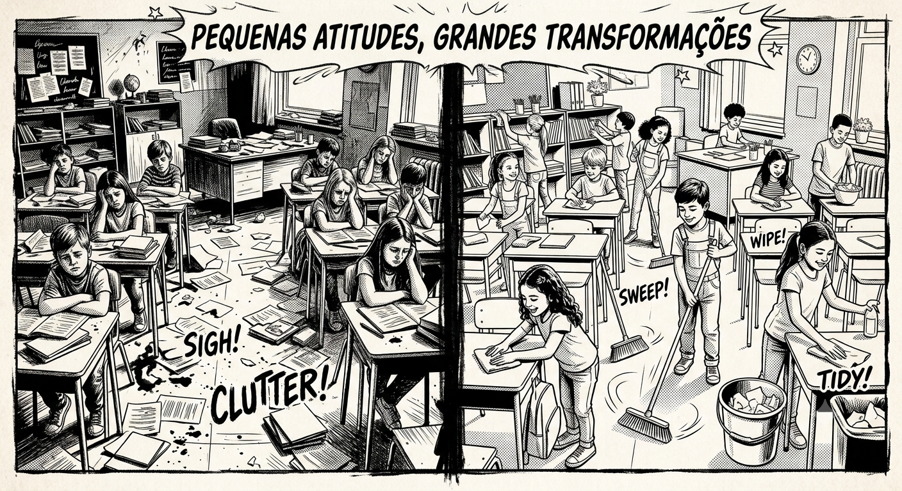
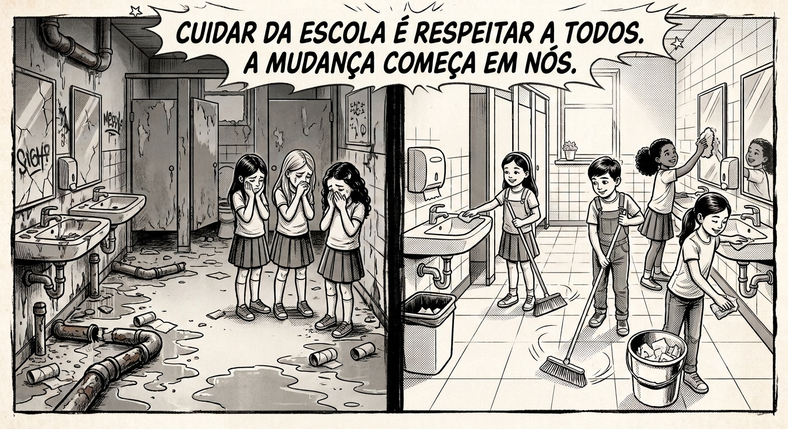
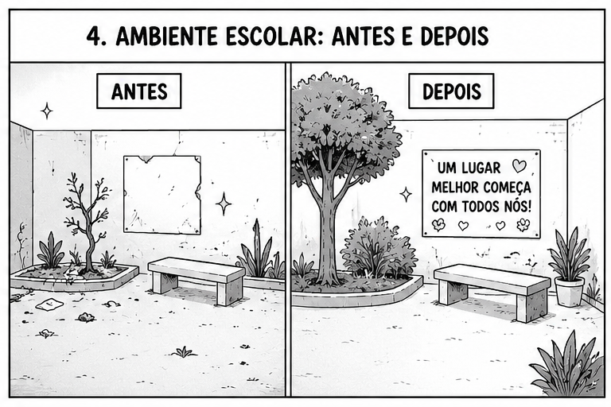
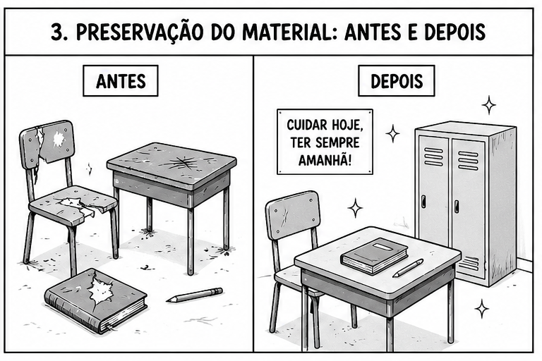

pequenas atitudes grandes transformaçoẽs
O QUE NÓS PODEMOS FAZER PARA TORNAR NOSSA ESCOLA AINDA MELHOR?

quando nos unimos com resonsabilidade e cuidado,
transformamos nossa escola em um ambiente limpo, acolhedor e inspirador para todos.
NOSSA ESCOLA NOSSO COMPROMISSO
O QUE NÓS PODEMOS FAZER PARA TORNAR NOSSA ESCOLA AINDA MELHOR?

Podemos cuidar do nosso colégio mantendo as salas e os espaços limpos, preservando os materiais
e respeitando professores, funcionários e professores.
NOSSA ESCOLA NOSSO COMPROMISSO
O QUE NÓS PODEMOS FAZER PARA TORNAR NOSSA ESCOLA AINDA MELHOR?

Cuidar do ambiente escolar é responsabilidade de todos; juntos, podemos transformar nossa escola
em um lugar melhor.
NOSSA ESCOLA NOSSO COMPROMISSO
O QUE NÓS PODEMOS FAZER PARA TORNAR NOSSA ESCOLA AINDA MELHOR?

Cuidar do material escolar é valorizar o conhecimento
e respeitar o esforço de quem investiu no seu futuro.
NOSSA ESCOLA NOSSO COMPROMISSO
O QUE NÓS PODEMOS FAZER PARA TORNAR NOSSA ESCOLA AINDA MELHOR?
O cuidade com o patrimônio da escola é responsabilidade
de todos os estudantes e funcionários, os bens duráveis são importantes para o desenvolvimento
dos estudantes e gera um ambiente melhor para todos os envolvidos.